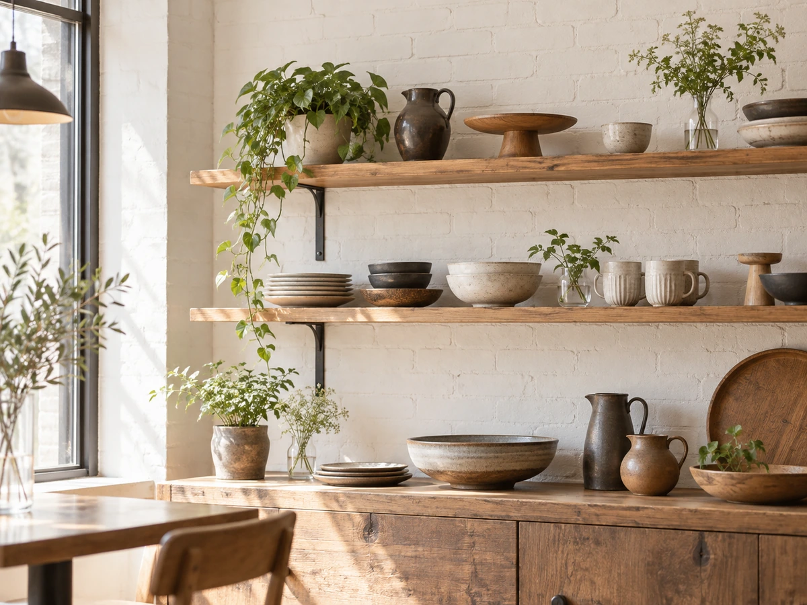

CONCEPT
店名に込めた、
ひとつの願い
IN HER LIFEは、カフェと生活雑貨のお店を組み合わせた「CAFE & LIFE STYLE」のお店です。 生活雑貨、テーブルウェア、文具、ヴィンテージの雑貨などが並びます。
IN HER LIFE
人生の転機、選択、出会い、別れ。人はそれをくり返しながら、自分の居場所を見つけていく。このお店が、来てくれた人の人生の中で特別な場所になってほしいという願いから名付けられたと、公式サイトで紹介されています。
11周年を迎えた日、お店のInstagramには、こんな言葉が書かれていました。
これからも皆様のお気に入りのカフェであり続けられるようアイデアを振り絞っていきたいと思います。 公式Instagram（2026年9月1日）より
季節ごとに新しい一皿と一杯を考え続けている、11年目のお店です。
